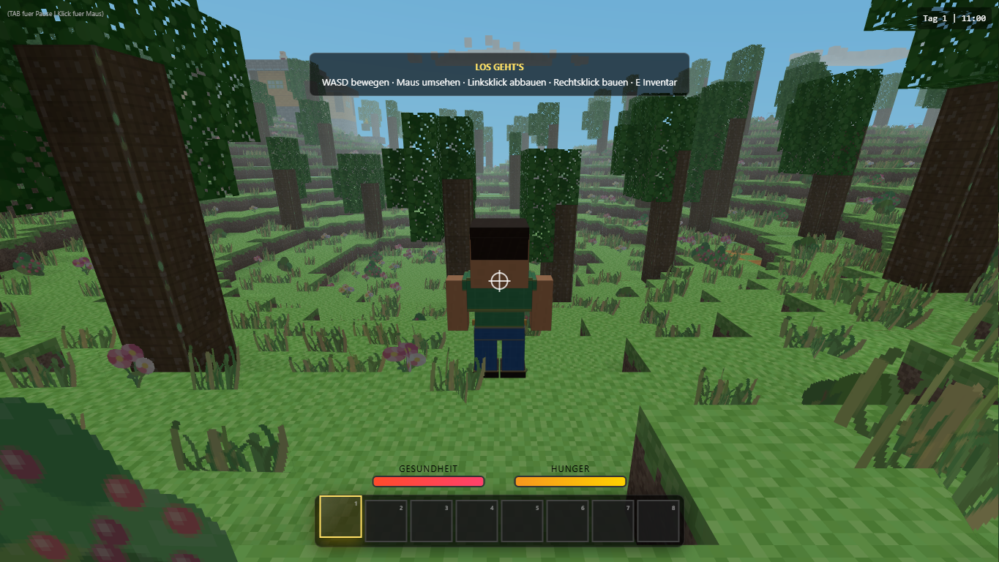
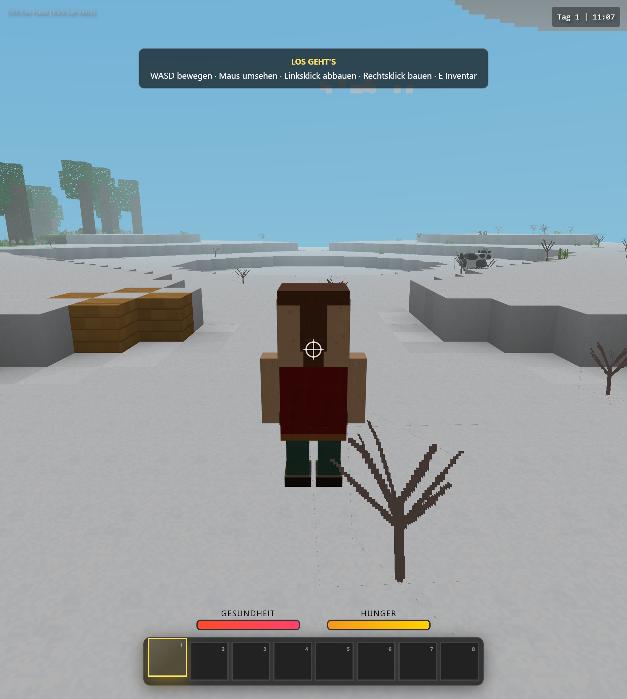
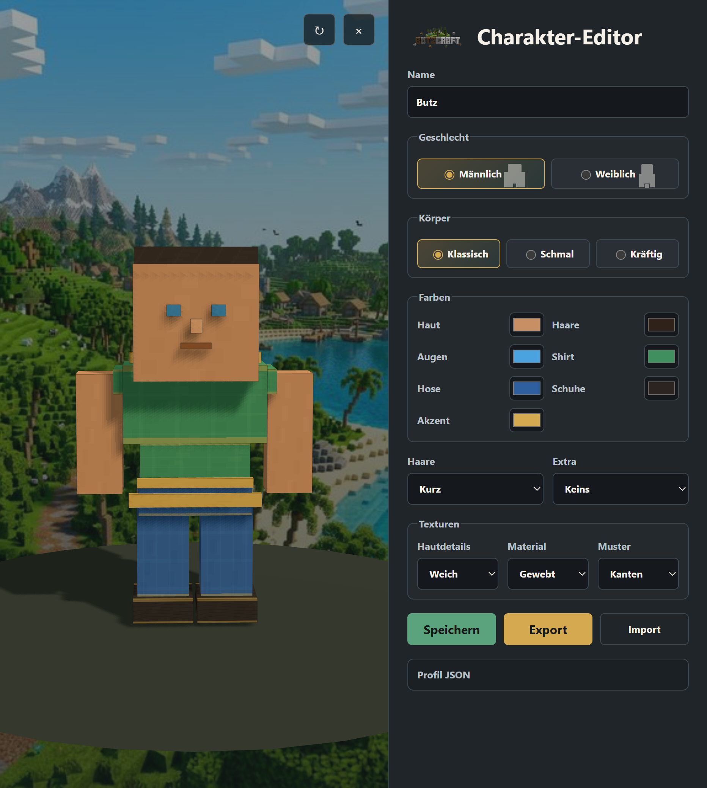

Mehr als nur bauen
Entdecke, was unter der Oberfläche wartet.
- Dungeons & Spawner
- Handel & Quests
- Wetter & Tageszeiten
- Tiere & Gegner
Direkt im Browser spielbar
Sammle Ressourcen, fertige Werkzeuge und entdecke eine offene Blockwelt voller Biome, Dörfer und verborgener Dungeons.
Dein Abenteuer
Friedlicher Sonnenaufgang oder riskanter Abstieg: Du entscheidest, ob du baust, handelst, erkundest oder dich auf die nächste Nacht vorbereitest.


Mehr als nur bauen
Die ersten Minuten
Holz, Stein und Nahrung bilden die Grundlage für dein Abenteuer.
Verwandle Rohstoffe in Werkzeuge, Ausrüstung und nützliche Blöcke.
Errichte einen sicheren Unterschlupf, bevor die Sonne untergeht.
Suche Dörfer, seltene Erze und die Schätze verborgener Dungeons.
Dein Charakter
Wähle Körperform, Haare, Farben und Accessoires. Dein Charakter begleitet dich vom ersten Holzblock bis tief in die dunkelsten Höhlen.
Charakter gestalten
Editor öffnenDie Welt wartet
Kein Download. Kein langes Setup. Einfach starten und losbauen.
Butzcraft spielenGut zu wissen
Mit WASD bewegst du dich, mit der Maus siehst du dich um. E öffnet das Inventar, die Leertaste lässt dich springen.
Ja. Im Pausenmenü kannst du Spielstände speichern, laden, exportieren und importieren.
Noch nicht. Gemeinsame Welten sind als kommender großer Schritt geplant.